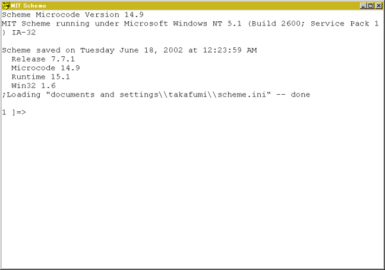

第 2 章 将Scheme用作计算器
- 2.1 简介
- 2.2 将Scheme作为一个计算器
- 2.3 四种基本算术操作
- 2.4 其它算术操作
- 2.4.1 quotient，remainder，modulo和sqrt
- 2.4.2 三角函数
- 2.4.3 指数和对数
- 2.5 小结
- 2.6 习题解答
- 2.6.1 答案1
- 2.6.2 答案2
2.1 简介
让我们把Scheme解释器当作计算器来使用。它比Windows附带的计算机方便多了。
2.2 将Scheme作为一个计算器
点击 开始 → 所有程序 → MIT Scheme → Scheme 来启动Scheme解释器以及如下图所示的控制台。

首先，让我们计算1加2的值，在提示符中输入(+ 1 2)：
1 ]=> (+ 1 2)
;Value: 3
1 ]=>
解释器返回3作为答案。请注意以下三点：
- 一对括号代表了一次计算的步骤。本例中，
(+ 1 2)代表步骤1+2。 - 左括号后紧跟着一个函数的名字，然后是参数。Scheme中大多数的操作符都是函数。在本例中，函数
+首先出现，然后紧跟两个参数：1和2. - 标记的分隔符是空格（Space）、制表符（Tab）或者换行符（Newline）。逗号和分号不是分隔符。
让我们来详细地分析计算过程。在这个函数中，当所有的参数被求值后，计算开始处理。对参数的求值顺序是没有被规范的，也就是说，参数并不是总是会从左到右求值。
- 符号
+被求值为加法过程。仅在前端输入+，解释器会返回：[arity-dispatched-procedure 1]这表明+是代表“过程1”的一个符号 - 对
1求值得到1。通常来说，对布尔值，数字，字符以及字符串求值的结果就是它们本身。另一方面，对符号求值的结果可能是一些它的东西。 - 对
2求值得到2。 - 最后，对
(+ 1 2)求值得到3并跳出括号。在Scheme中，求得的值会跳出括号外，并且这个值（表达式的最终值）会被打印到前端。
函数+可以接受任意多的参数。
(+) ;→ 0
(+ 1) ;→ 1
(+ 1 2) ;→ 3
(+ 1 2 3) ;→ 6
2.3 四种基本算术操作
Scheme（以及大多数Lisp方言）都可以处理分数。
函数exact->inexact 用于把分数转换为浮点数。Scheme也可以处理复数。复数是形如a+bi的数，此处a称为实部，b称为虚部。+、-、*和/分别代表加、减、乘、除。这些函数都接受任意多的参数。
例：
(- 10 3) ;→ 7
(- 10 3 5) ;→ 2
(* 2 3) ;→ 6
(* 2 3 4) ;→ 24
(/ 29 3) ;→ 29/3
(/ 29 3 7) ;→ 29/21
(/ 9 6) ;→ 3/2
(exact->inexact (/ 29 3 7)) ;→ 1.380952380952381
括号可以像下面这样嵌套：
(* (+ 2 3) (- 5 3)) ;→ 10
(/ (+ 9 1) (+ 2 3)) ;→ 2
形如这些由括号、标记（token）以及分隔符组成的式子，被称为S-表达式。
练习 1
使用Scheme解释器计算下列式子：
- (1+39) * (53-45)
- (1020 / 39) + (45 * 2)
- 求和：39, 48, 72, 23, 91
- 求平均值：39, 48, 72, 23, 91（结果取为浮点数）
2.4 其它算术操作
2.4.1 quotient，remainder，modulo和sqrt
- 函数
quotient用于求商数（quotient）。 - 函数
remainder和modulo用于求余数（remainder）。 - 函数
sqrt用于求参数的平方根（square root）。
(quotient 7 3) ;→ 2
(modulo 7 3) ;→ 1
(sqrt 8) ;→ 2.8284271247461903
2.4.2 三角函数
数学上的三角函数，诸如sin，cos，tan，asin，acos和atan都可以在Scheme中使用。atan接受1个或2个参数。如果期望atan的结果是1/2 π，就使用第二个参数指明使用弧度制。
(atan 1) ;→ 0.7853981633974483
(atan 1 0) ;→ 1.5707963267948966
2.4.3 指数和对数
指数通过exp函数运算，对数通过log函数运算。a的b次幂可以通过(expt a b)来计算。
练习2
使用Scheme解释器求解下列式子：
- 圆周率π。
- exp(2/3)。
- 3的4次幂。
- 1000的对数
2.5 小结
本章中，我们已经将Scheme解释器当作计算器来使用。这会让你快速上手Scheme。我会在下个章节讲解Scheme的数据类型‘表’。
2.6 习题解答
2.6.1 答案1
;1
(* (+ 1 39) (- 53 45)) ;⇒ 320
;2
(+ (/ 1020 39) (* 45 2)) ;⇒ 1510/13
;3
(+ 39 48 72 23 91) ;⇒ 273
;4
(exact->inexact (/ (+ 39 48 72 23 91) 5)) ;⇒ 54.6
2.6.2 答案2
;1
(* 4 (atan 1.0)) ;⇒ 3.141592653589793
;2
(exp 2/3) ;⇒ 1.9477340410546757
;3
(expt 3 4) ;⇒ 81
;4
(log 1000) ;⇒ 6.907755278982137